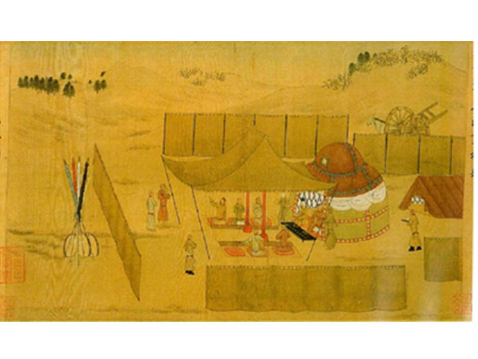
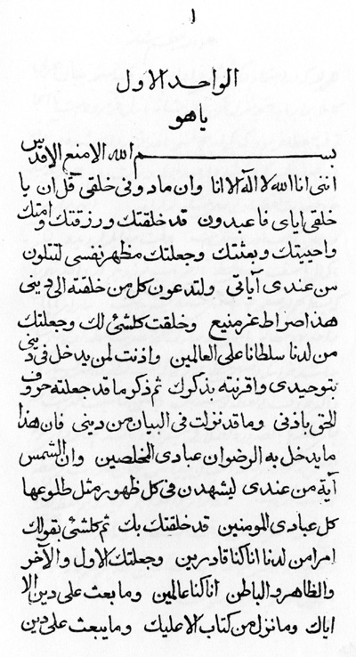
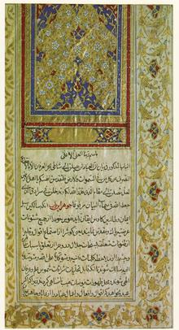

§1 In das Heiligtum eintretet
Der Begriff Heiligtum steht hier im übertragenen Sinne für geistige Wahrheiten in den Heiligen Schriften, die den Menschen verborgen sind, die sie aber durch eigenes, unvoreingenommenes, von anderen unbeeinflusstes Suchen erkennen können. Eintritt in das Heiligtum bedeutet, zu der wichtigsten dieser Wahrheiten zu gelangen, d. h. anzuerkennen, dass Gott nur einer und Religion de facto auch nur eine ist bzw. dass alle Offenbarer dieselbe eine Botschaft, dieselbe eine Religion für dieselbe eine Menschheit verkünden. Dieses religionsgeschichtliche Grundprinzip ist Teil des Bundes, den Mose im Auftrag Gottes mit den Israeliten am Berg Sinai geschlossen und dessen Erneuerung er durch einen nachfolgenden Offenbarer angekündigt hat.
Das Wort Heiligtum spielt auf den allerheiligsten Bereich des Tabernakels an, einem Zelt, das von den Kindern Israels auf Befehl Gottes in der Wüste errichtet wurde und als tragbarer Verwahrungsort der Bundeslade diente. Die Gesetzestafeln dieses Bundes wurden nach Aussage der Tora in der Bundeslade im Allerheiligsten des Tabernakels aufbewahrt.
Das Wort Heiligtum ist eine von Tabernacle, das vom Lateinischen tabernaculum für ,kleines Zelt’ stammt. Martin Luther hat es mit ,Stiftshütte’ (LdB) übersetzt. In der Tora bezeichnet es das tragbare Heiligtum, das von den Kindern Israels auf Befehl Gottes in der Wüste errichtet wurde (EJ2). In der Tora wird u. a. das Wort ha-qodesh (Ex 28:29) für das Heilige oder das Heiligtum verwendet. In Form eines Zeltes aufgebaut und von einem Holzzaun umgeben, diente es während der Wanderung des Volkes Israel in der Wüste als tragbarer Verwahrungsort der Bundeslade, einem Behälter, in dem die Tafeln Mose, die er auf dem Berg Sinai von Gott erhalten hatte, aufbewahrt wurden. Das Allerheiligste im Innersten des Tabernakels, das qodesh ha-qodesh, war durch einen Vorhang abgetrennt (Ex 26:31ff). Nach der Darstellung der Tora wohnte Gott in dem Tabernakel und sprach dort mit Mose. Die Gesetzestafeln des Bundes Mose wurden im Allerheiligsten in der Bundeslade im Tabernakel aufbewahrt, das durch Vorhänge abgetrennt und von außen nicht sichtbar war. Um dort eintreten zu dürfen, müssen sich die Menschen reinigen (Ex 25:8, 28:43, 40:34). Diese Reinigung entspricht dem Ablegen überkommener, tradierter oder gar falscher religiöser Vorstellungen durch selbständige Suche nach Wahrheit (KI 2). Von diesen Vorstellungen gereinigt können sie zum Allerheiligsten und zur Bundeslade gelangen, die hier als Sinnbild für den gemeinsamen Kern der Religionen Gottes angesehen werden kann. Nach dem Eintritt in das Tabernakel schieben die Menschen auf dem Weg zum Allerheiligsten die Vorhänge althergebrachten Wissens und vorgefasster Meinungen beiseite und sehen die Bundeslade, die für den gemeinsamen Kern aller Religionen steht. Sie ist das Symbol für den Bund Gottes mit dem Volk Israel, der – wie Moses am Berg Sinai verkündete – durch spätere Offenbarer erneuert wird (Deut 18:15). Zudem enthält sie nach biblischer Darstellung unter anderem zwei Steintafeln mit den Zehn Geboten, die Mose von Gott erhielt und die in ähnlicher Form in allen Religionen vorkommen.
Diesen gemeinsamen Kern (an)zuerkennen, heisst statt eine bestimmte Religion als die vermeintlich absolut wahre anzusehen, die Erkenntnis zuzulassen, dass „Gott nur einer … und … Religion nur eine ist“ (OCF Vorwort, GPB 6:25) bzw. dass alle Offenbarer dieselbe eine Botschaft, dieselbe eine Religion für dieselbe eine Menschheit verkünden.
Nach dem Koran ist die Bundeslade das Zeichen der Herrschaft der Gesandten Gottes. Sie enthält die reine Lehre von Moses und Aaron. In der Gegenwart der Lade erleben die Menschen die „Ruhe vom Herrn“ (2:248-253). Das Evangelium spricht von einem himmlischen Abbild (Heb 8:2) des Tabernakels Mose (Heb 8:5), in dem Christus als Mittler den Bund zwischen Gott und Mensch erneuert (Heb 8:1-6). Bahá’ú’lláh führt diese Interpretationen im Buch der Gewissheit zusammen und weitet sie auf alle Offenbarer aus: Alle wohnen „im selben Heiligtum“ (KI 162), durch Sie alle wird der Bund Gottes erneuert, Sie alle verkünden dieselbe reine Wahrheit. Wer den Offenbarer, der den Bund Gottes für die aktuelle Zeit erneuert, (an)erkennt, tritt in das „Tabernakel des Lebens“ ein, begegnet Gott, dem Vielgeliebten, und erreicht das Endziel seiner Suche (KI 65). Dieser Eintritt in das „Zelt ewiger Vereinigung“ (KI 221) steht also für die An(Erkenntnis) dieses Bundes durch die Menschen. Denn auf Gottes Geheiß haben alle Offenbarer Ihre Vorgänger bestätigt, das Erscheinen Ihrer Nachfolger angekündigt und mit Ihren Anhängern den Bund geschlossen, dass Sie diesem Verheißenen folgen werden, wie Abdu’l-Bahá es beschreibt (Towfigh 39, BWF 357, EBF).
Diesen Bund hat Moses im Auftrag Gottes mit den Israeliten am Berg Sinai geschlossen und dessen Erneuerung hat Er selbst (Deut 18:15, L&E 174) und später u. a. der Prophet Jeremia angekündigt (Jer 31:31, LDB). Dieser Bund ist ebenso durch Christus als Mittler (Heb 8:5, Mk 14:24), sowie durch die Offenbarung von Muḥammad (Q 3:3), dem Báb (SWB 87) und Bahá’u’lláh (HW P 71, SAB 207) erneuert worden (→§13 Und dabei haben doch …). Diesen Bund (an)zuerkennen, gelingt den Menschen, die sich von den heute verbreiteten Vorstellungen über Religion befreien. Dazu müssen sie, statt nur an einen einzigen Offenbarer zu glauben, an alle glauben und Sie alle auf der gleichen Stufe sehen (TAH I 200). Dieses Prinzip ist der „Maßstab wahren Erfassens und Erkennens Gottes und seiner Propheten“ (KI 2). Auf diese Weise finden sie einen von Dogmen unverfälschten Zugang zum gemeinsamen Kern der Religion(en), zur Urreligion Gottes.
Neben Bezeichnungen für das Heiligtum, die religiös belegt sind und direkt andeuten, dass dies ein Bereich ist, der Gott vorbehalten ist (hebr. ha-qodesh, griech. hagios), verwenden die Heiligen Schriften auch Bezeichnungen, die aus dem weltlichen, genauer genommen höfischen Bereich stammen. Besonders zu nennen ist der Begriff surádiq, der aus diesem Bedeutungsfeld stammt und ursprünglich einen Raum benannte, der dem König vorbehalten und vom restlichen Lager durch wollene Tücher abgegrenzt war. Später übertrug man den Begriff auf das große Zelt des Königs. Durch Wachen abgesichert war dieser Bereich den Menschen nicht zugänglich, es sei denn, sie erfüllten, wie beim Tabernakel, die Voraussetzungen für den Eintritt: das heißt, sie hatten die Erlaubnis des Königs, waren angemessen gekleidet und einiges mehr (Durand, EI2 khayma). Das Wort surádiq leitet sich vom persischen Wort sarápardih für Vorhang ab (ASA IV, FVQ, Eilers). Der Begriff kommt in den Bahá’í-Schriften ca. 400 mal vor. Er deutet geistige Stufen an, die wie durch einen Vorhang den Augen unvorbereiteter Seelen verborgen sind (TSR 90, 168). Auch der Koran verwendet den Begriff surádiq als Symbol für die eingeschränkte Erkenntnisfähigkeit der Menschen. Dort ist surádiq ein Zelt mit Wänden aus Rauch und Feuer. Diese Wände können diejenigen, die ihren Leidenschaften folgen und den göttlichen Offenbarer ablehnen, nicht überwinden (ADQ) (18:28-29).
Chinesische Miniatur mit dem durch surádiq abgetrennten Bereich des Königs
(Durand-Guédy 163)
Generell ist Tabernakel der Gegenstand, an dem oder durch den die Gegenwart Gottes wirksam wird (BTHW) oder der Ort, an dem die Seele in eine vertraute Verbindung zu ihrem Schöpfer gelangt (OCF 25). So symbolisiert Tabernakel je nach Bezug die Person der Offenbarer, die Heilige Schrift oder das Gesetz Gottes, insbesondere seine schützende Funktion für die Gesellschaft.
Anmerkungen:
- David Durand-Guédy (Ed.): Turko-Mongol Rulers, Cities and City Life, 2013, Leiden, Brill, see especially p. 159-162
- Eilers, Wilhelm: Iranisches Lehngut im arabischen Lexikon, in Indo-Iranian Journal, 5(3):203-232, September 1962
- Towfigh, Nicola: Schöpfung und Offenbarung aus Sicht der Bahá’í-Religion, 1989, Hildesheim, Georg Olms Verlag
- Taherzadeh, Adib: Die Offenbarung Bahá’u’lláhs, Bd I, 1981, Hofheim, Bahá’í-Verlag (TAH I)
- Das Universale Haus der Gerechtigkeit (Hrsg.): Ein Gemeinsamer Glaube, Langenhain, 2006, Bahá’í-Verlag (OCF)
§2 Am Himmel des Bayán errichtet
Das arabische Wort bedeutet Darlegung bzw. Erklärung. Mit dem bestimmten Artikel, d. h. der Bayán, ist es der Titel zweier Werke des Báb, dem persischen und arabischen Bayán. Ersterer beinhaltet neben Seinen Lehren und Geboten viele Hinweise auf den Verheißenen, der nach dem Báb erscheinen und den Bayán vollenden wird. Grundsätzlich bedeutet Bayán die Auslegung der verborgenen Bedeutung der symbolischen und gleichnishaften Aussagen in den Heiligen Schriften durch die Offenbarer – im Besonderen die prophezeiten Zeichen und wundersamen Ereignisse am Verheißenen Tag. In diesem Sinne wird das Wort Bayan sowohl im Koran wie auch im Evangelium benutzt, das den entsprechenden griechischen Begriff verwendet. Auf diese Stellen in den Heiligen Schriften spielt der oben erwähnte Titel Bayán an, da der Báb in diesem Buch einige dieser symbolischen Stellen auslegt. Das „am Himmel des Bayán errichtete“ Heiligtum steht hier für die Interpretation der wahren Bedeutung dieser in allen Heiligen Schriften genannten Zeichen im Lichte des gemeinsamen Kerns der Religionen, der Urreligion Gottes. Diese Bedeutung gilt es zu erkennen und dadurch → §1 in das Heiligtum einzutreten. Aufgrund der Erhabenheit der Heiligen Schriften spricht das Buch der Gewissheit hier vom Himmel, d.h. Himmel aller Heiligen Schriften.
Von den beiden Schriften des Báb mit dem Titel Bayán ist der persische Bayán der bedeutendere (GPB 2:14, EIR). Er enthält neben Seinen Lehren, Gesetzen und Geboten auch unzählige Hinweise auf den Verheißenen, auf „Denjenigen, den Gott manifestieren wird“ (DCI 72, 167, EIR). In dem Buch sollte man in den Worten Shoghi Effendis „eher eine Lobpreisung des Verheißenen sehen, als einen Kanon von Gesetzen und Geboten zur ständigen Führung künftiger Geschlechter“ (GPB 2:14). Der Báb hat den Text des Bayán unvollendet gelassen und prophezeit, dass der Verheißene dieses Werk in der Gestalt eines anderen Buches vervollständigen würde. Die Bahá’í sehen Bahá’u’lláh als den vom Báb Verheißenen an, der mit Seinem Buch der Gewissheit den Bayán vollendet hat (DCI 9, Afnan).
Göttlich offenbarte Lehren bzw. heilige Bücher werden im Koran als bayán bezeichnet (Q 55:4). Der Koran nennt sich auch selbst Bayán (Q 3:138). Der Begriff bayán bezieht sich im Koran daher ebenso auf die Auslegung der Mysterien in den Heiligen Schriften (Q75:19, 5:15). Der Koran wie auch die Tora und das Evangelium prophezeien übernatürliche, wundersame Ereignisse, die sich am Tag der Auferstehung ereignen werden, wie z. B. die Verfinsterung des Mondes, die Vereinigung von Sonne und Mond, das doppelte Blasen in das Horn (Q 39:68) usw. Nach dem Koran kennt niemand ihre Deutung außer Gott und „denjenigen, die im Wissen fest gegründet sind.“ (3:7). Im Koran heißt es, dass am Verheißenen Tag die innere Bedeutung dieser Verse „erklärt“ (Q 75:19) wird. Auch die hebräische Bibel spricht davon, dass die Bedeutung der Zeichen bis zum Ende der Zeit „versiegelt“ (hebr. wa-ḥăṯōm) ist und dass sie am Ende der Zeit offengelegt wird (Dan 12:4). Analog spricht Christus in der Bibel in Gleichnissen vom Reich Gottes (Mt 13:34) und kündigt an, dass der Geist der Wahrheit diese erläutern wird (Joh 16:8).
Diese Symbole sind also nicht wörtlich gemeint, denn dann wäre die Offenlegung ihres Bedeutungsgehalts zu einem späteren Zeitpunkt nicht nötig. Es geht hier vielmehr um Prinzipien und Gesetzmäßigkeiten, die der Religion Gottes und ihrer Offenbarung zugrunde liegen und die die Menschen damals – im Gegensatz zu heute – nicht verstanden hätten. Daher hat Gott verordnet, dass diese Verse in symbolischer Form offenbart werden und dass ihre Bedeutungen vollständig offengelegt werden soll, wenn die Menschheit für Ihre Offenlegung bereit ist. Bis dieser Zustand erreicht ist, sollten durch die Sprachgewalt und Symbolkraft dieser Stellen die Menschen ermutigt und motiviert werden, das Gesetz Gottes einzuhalten (M&M 53).
Für die Offenlegung der Bedeutung dieser Symbole am verheißenen Tag verwendet der Koran das Wort bayán (Q75:19). Die Bibel verwendet den Begriff diermēneu (διερμήνευσεν, SN 1329), der – ähnlich wie bayán – so viel bedeutet wie interpretieren, deuten, verborgenen Inhalten Ausdruck verschaffen (EWNT ἑρμηνεύω 3). Das Wort kommt an den Stellen vor, wo Christus für Seine Jünger, die im Gegensatz zu den restlichen Menschen geistig empfänglich waren (Mk 4:34), die Prophezeiungen von Moses und den Propheten, die Sein Erscheinen betrafen (Lk 24:27), interpretiert hat.
Der persische Bayán und ganz besonders das Buch der Gewissheit erfüllen die Zusicherungen der drei Heiligen Schriften, dass die Bedeutung der symbolischen Stellen offengelegt werden, wenn die Menschheit soweit ist, diese verstehen zu können. Die Interpretationen harmonieren mit der Glaubens- und Symbolwelt von allen drei Schriften.
Erste Seite des Arabischen Bayán
Anmerkungen:
- Zu verborgenen Bedeutung der Schrift im Christentum vor dem Hintergrund der unterschiedlichen Fähigkeit, die Schrift zu verstehen vgl. für einen herausragenden christlichen Denker Origenes: Peri Archon, III, I, 6 und für einen herausragenden islamischen Denker vgl. as-Suhrawardí, Hayákil an-Nur, zitiert in M&M 54
- Afnan, Muhammad: Explications en arabe / en persan persan in Mattéï: Encyclopédie philosophique universelle III
§3 Das ist der Sinn dieser Worte:
Das Buch der Gewissheit ist in zwei Teilen aufgebaut. Jeder Teil fängt mit einem arabischen Absatz an, der im anschließenden Absatz auf Persisch wiederholt und paraphrasiert wird. Dieser Aufbau spielt indirekt auf die Struktur des Bayán an, da das Buch der Gewissheit dessen Fortsetzung und Vollendung darstellt.
Der persische Bayán war vom Báb als ein Buch mit 19 Einheiten (arab. váḥid واحد) bestehend aus jeweils 19 Kapiteln angelegt, die als báb (باب) bezeichnet werden, was im Arabischen auch Kapitel eines Buches bedeuten kann. Der Báb hatte das Buch bis zur neunten Einheit fertiggestellt und prophezeit, dass der Verheißene den Bayán vervollständigen würde (EBF). Die Bahá’í sehen das „Buch der Gewissheit“ als die Fortsetzung bzw. geistige Vollendung des Bayán an, allerdings in der Gestalt eines anderen, eigenständigen Buches (LOG 1544). Dies spiegelt sich im Aufbau des Íqán wieder, der ebenfalls aus zwei Teilen bzw. Kapiteln besteht. Jeder Teil beginnt mit einem auf Arabisch geoffenbarten Absatz (§1, §102 ), der jeweils das Thema des darauf folgenden Kapitels beschreibt. Es wird in dem jeweiligen ersten persischen Absatz (§2, §103) ausführlich erläutert. Diese persischen Absätze werden jedes Mal eingeleitet mit „Dies ist der Sinn …“ (§2) oder „Es ist Sinn und Zweck dieser Ausführungen …“ (§103). In den weiteren Abschnitten folgt dann der Haupttext, der eigentliche Inhalt des Kapitels. Der jeweils letzte Absatz (§101, §286) stellt klar, dass alle Dinge im Glauben ihre Vollendung in der Anerkenntnis des Verheißenen des Bayán finden bzw. warnt die Gläubigen davor, den Verheißenen zurückzuweisen. Ähnlich sind die Kapitel des Bayán aufgebaut. Ihre Struktur ist: Einleitender Absatz auf Arabisch, gefolgt von einem ausführlichen erläuternden persischen Absatz, dem der Haupttext des Kapitels folgt. Das Ende des Kapitels bildet dann eine Aussage, die als Sinn und Zweck des Studiums dieses Kapitels die Anerkenntnis des Verheißenen bei Seinem Erscheinen darstellt. (LAC 128).
Zwischen dem zweiteiligen Aufbau des Buches der Gewissheit von Bahá’u’lláh und der Aufteilung des Baýan in 19 Einheiten durch den Báb gibt es eine verdeckte Beziehung. Diese 19 Einheiten des persischen Bayán stehen für den Báb und seine achtzehn Jünger, die Buchstaben des Lebendigen. Sie stehen auch für die 19 Buchstaben des einleitenden Verses im Koran „Im Namen Gottes, des Barmherzigen, des Verzeihenden“ (bismilláḥi’r-raḥmáni’r-raḥím), mit dem jede Sure des Koran außer der Neunten beginnt und der im Arabischen aus 19 Buchstaben besteht. Nach islamischer Überlieferung beinhaltet dieser Vers die gesamte geistige Wahrheit aller bisher offenbarten Heiligen Schriften. Die Quintessenz dieses Verses ist wiederum in seinem ersten Buchstaben (arabisch b, ب) verborgen. Der Buchstabe ب kommt an zweiter Stelle im arabischen Alphabet vor und hat den Zahlenwert 2 in der arabischen Zahlenmystik. Die zwei Teile des Buches der Gewissheit spiegeln die 19 Einheiten des Bayán wider und deuten die geistige Vollendung des Bayán in anderer Gestalt an (LAC 130).
Dieser in Arabisch gehaltene einleitende Absatz am Anfang der beiden Teile des Íqán ist in der deutschen und englischen Übersetzung kursiv gedruckt und wird in dieser arabisch-persischen Kalligraphie mit roter Schrift begonnen. (Quelle: Bayluzi)
Anmerkungen:
- Quelle des Bildes rechts: Balyuzi: Bahá’u’lláh, the King of Glory, 1980, Oxford, George Ronald
- Báb bedeutet im arabisch sowohl Tor, als auch Kapitel eines Buchs
§2 Worte … sterblicher Menschen zum Maßstab des Erkennens … der Propheten nehmen
Der Maßstab für das Erkennen Gottes und der Propheten sind ausschließlich die Heiligen Schriften der verschiedenen Religionen. Dabei gilt es, alle Heiligen Schriften heranzuziehen, denn sie stützen, ergänzen, erläutern und kommentieren sich gegenseitig.
Die Heiligen Schriften sind das Maß, nach dem die Werke der Gelehrten und Wissenschaftler zu beurteilen sind und nicht umgekehrt. So heißt es bei Bahá’u’lláh: „O Schar der Geistlichen! Wägt Gottes Buch nicht mit Maßstäben und Wissenschaften, wie sie bei euch im Schwange sind. Denn das Buch selbst ist die untrügliche Waage, die unter den Menschen aufgestellt ist. Auf dieser vollkommenen Waage muss alles gewogen werden, was die Völker und Geschlechter der Erde besitzen, während ihre Gewichte nach ihrem eigenen Richtmaß geprüft werden sollten“ (KA 99).
In der Tora und dem Koran ist dies symbolisch angedeutet, unter anderem beim Wunder, das Mose und Aaron, der ältere Bruder Mose und erster Hohepriester der Israeliten, in der Gegenwart des Pharao vollbrachten. Aaron warf auf Weisung Gottes seinen Stab zu Boden, und dieser wurde zur Schlange. Die Priester des Pharao taten das gleiche. Auch ihre Stäbe wurden zu Schlangen. Doch die Schlange Aarons war größer und mächtiger als die der Priester (Ex. 7:8-13), d. h. sein gottgegebenes Wissen war größer als das menschliche Wissen der Priester des Pharaos. So setzten sich Aarons Worte durch.
Als Beispiel aus dem neuen Testament sei die Antwort Christi auf die Frage nach dem wichtigsten Gebot der jüdischen Tradition genannt. In Seiner Antwort zitiert Er Verse aus der Tora, „Du sollst den Herrn, deinen Gott, lieben …“ (Deut 6:5) und „Du sollst deinen Nächsten lieben wie dich selbst“ (Lev 19:18). So stellt Er fest, dass ethisches Handeln durch die Liebe zu Gott und zu den Menschen motiviert sein muss (HThK Mt 22:39f). Seine Antwort sprengte das menschliche Denkmuster des Fragenden, der eigentlich wissen wollte, welches der über 600 Gebote, die die jüdische Tradition im Laufe der Zeit ausgemacht hatte, am höchsten priorisiert werden soll.
Wird dieses Prinzip verletzt und eine offenbarte Schrift unter Verweis auf tradiertes menschliches Wissen zurückgewiesen, kann es allen Religionen erheblich schaden – besonders im heutigen globalisierten Umfeld. So weisen alle etablierten Kommentare, die von der Endgültigkeit der ihnen zugrunde liegenden religiösen Tradition ausgehen, den nächsten Offenbarer zurück. Würde man sich an diesen Kommentaren orientieren, wären alle Religionen Gottes abzulehnen (FAR 182). Indem sie gegenseitig ihren Religionen die Legitimation absprechen und dem Bund zwischen den Offenbaren (→ §1 In das Heiligtum) widersprechen, führen sie letzten Endes auch die Heilige Schrift ihrer eigenen Religion, die sie eigentlich den Menschen näher bringen wollen, ad absurdum.